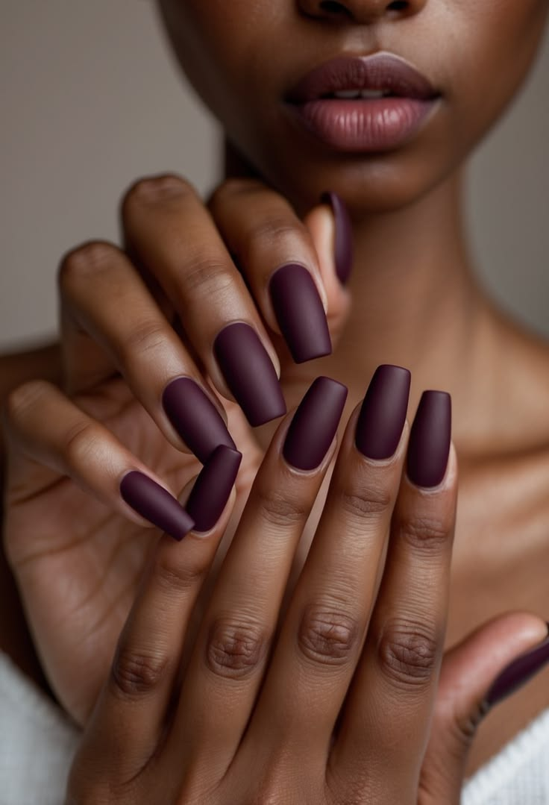
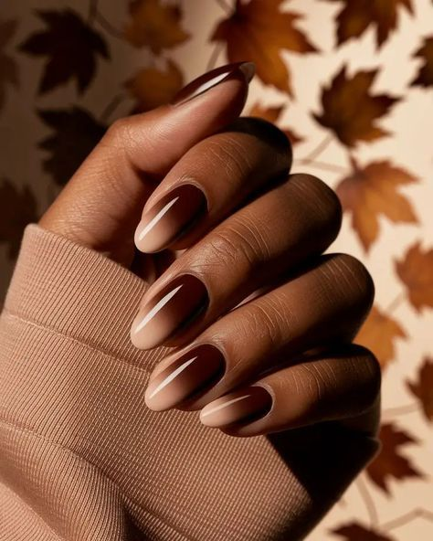

✦
Signature Gel Manicure
Precision e-file cuticle care, nail shaping, HEMA-free gel polish, and organic macadamia oil massage.
KSh 3,500Nairobi’s sanctuary for unhurried luxury manicure and pedicure rituals—crafted with HEMA-free Japanese gels, Kenyan shea & baobab botanicals, and hospital-grade sterilization.


Tucked inside a leafy courtyard in Westlands, Zuri Nail Atelier pairs architectural calm with master-level nail artistry. Every appointment opens with Kenyan purple tea or spiced chai, warm aromatic towels, and a careful assessment of your natural nail health.
Whether you prefer bare-buffed cuticles for the boardroom or bespoke chrome nail art for a weekend in Karen or Diani, we protect your living nail bed beneath every layer.
“Beautiful nails should never come at the cost of thin, damaged nail beds.”
From restorative dry manicures to custom hand-painted nail art, discover our most-loved Nairobi studio rituals.
Precision e-file cuticle care, nail shaping, HEMA-free gel polish, and organic macadamia oil massage.
KSh 3,500Builder gel fortification designed to grow weak or peeling natural nails without harsh acrylics.
KSh 4,800Warm mineral soak, Kenyan coffee scrub, baobab butter mask, hot stone massage, and glossy finish.
KSh 5,500Micro-French lines, chrome glazing, gold-leaf accents, or sculpted 3D art tailored to your look.
KSh 1,200+Every detail inside our Westlands studio is engineered for safety, longevity, and effortless relaxation.
All metal implements are sanitized in ultrasonic baths and sealed in hospital-grade autoclave pouches opened fresh before you.
We exclusively stock non-toxic, HEMA-free Japanese & Korean soft gels plus locally sourced botanical oils—zero harsh fumes.
Our technicians complete 200+ hours of advanced cuticle-work and nail-health training before joining our studio floor.
Seamless M-Pesa Till, Pesalink & Visa/Mastercard checkout, backed by a complimentary 7-day chip repair guarantee.